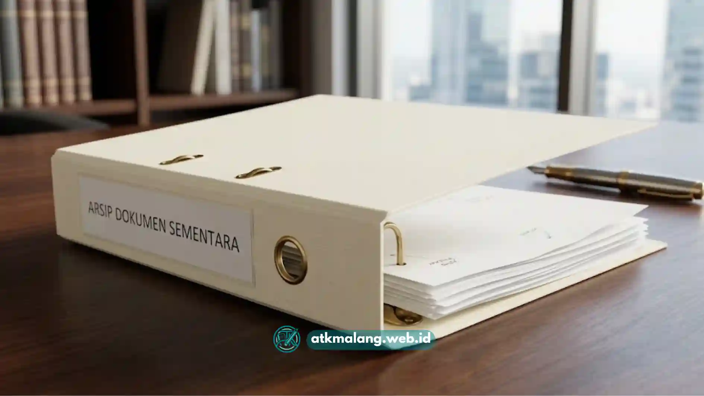

Memilih antara map snelhechter plastik dan kertas sering menjadi pertimbangan utama bagi pengelola arsip.
Keduanya memiliki keunggulan dan keterbatasan yang berbeda tergantung pada kebutuhan penyimpanan dokumen Anda.
Pemilihan material yang tepat akan memengaruhi keawetan dan keamanan dokumen arsip Anda.
Daftar Isi
- Apa Perbedaan Utama Map Snelhechter Plastik dan Kertas?
- Bagaimana Ketahanan Map Plastik Dibanding Map Kertas?
- Mana yang Lebih Ekonomis, Plastik atau Kertas?
- Kapan Sebaiknya Memilih Map Snelhechter Plastik?
- Kapan Sebaiknya Memilih Map Snelhechter Kertas?
- Perbandingan dari Sisi Tampilan dan Kesan Profesional
- Pertimbangan Aspek Lingkungan
Apa Perbedaan Utama Map Snelhechter Plastik dan Kertas?
Perbedaan paling mendasar terletak pada bahan badan utama dari map tersebut.
Map plastik umumnya terbuat dari bahan polypropylene yang lebih lentur dan juga tahan terhadap air.
Sementara itu, map kertas terbuat dari bahan karton atau board yang lebih kaku namun rentan kelembapan.
Perbedaan bahan ini pada akhirnya memengaruhi aspek penting lainnya dalam penggunaannya.
Aspek yang terpengaruh meliputi daya tahan pemakaian, bobot map, tampilan visual, serta harga jual.
Bagaimana Ketahanan Map Plastik Dibanding Map Kertas?
Map berbahan plastik pada umumnya lebih tahan terhadap percikan air, kelembapan udara, dan gesekan.
Hal ini sangat menguntungkan saat map perlu sering dipindahkan atau dibawa dalam mobilitas tinggi.
Sifat plastik yang tidak menyerap air melindungi dokumen dari kerusakan akibat tumpahan cairan.
Sebaliknya, map bahan kertas cenderung lebih mudah melengkung atau berubah bentuk jika lembap.
Namun, jika map kertas disimpan di ruangan yang kering dan jarang dipindah, daya tahannya sangat baik.
Bahkan map kertas mampu bertahan cukup lama untuk kebutuhan penyimpanan arsip jangka menengah.
Mana yang Lebih Ekonomis, Plastik atau Kertas?
Secara umum, harga map kertas cenderung lebih terjangkau dibandingkan dengan map plastik.
Hal ini berlaku untuk spesifikasi ketebalan yang setara, disebabkan oleh proses produksi yang sederhana.
Oleh karenanya, untuk pengadaan Alat Tulis Kantor rutin, map kertas sering menjadi pilihan utama.
Namun, map plastik dapat menjadi jauh lebih ekonomis dalam investasi jangka panjang.
Hal ini terjadi apabila map digunakan berulang kali karena sifatnya yang tidak perlu sering diganti.
Pemilihan yang tepat mempertimbangkan harga unit, frekuensi pakai, dan usia pakai.

Map bahan kertas karton sangat ideal untuk penyimpanan arsip yang statis.Kapan Sebaiknya Memilih Map Snelhechter Plastik?
Penggunaan map plastik akan jauh lebih disarankan apabila menemui kondisi-kondisi berikut ini:
- Dokumen akan sering dibawa keluar ruangan atau berpindah lokasi secara aktif.
- Ruang penyimpanan dokumen yang tersedia memiliki tingkat kelembapan yang tinggi.
- Map akan digunakan secara berulang untuk dokumen berbeda dalam jangka waktu panjang.
- Dokumen di dalamnya tergolong penting, seperti dokumen legal dan berkas kontrak.
Kapan Sebaiknya Memilih Map Snelhechter Kertas?
Sebaliknya, map dengan bahan kertas akan lebih sesuai apabila Anda menghadapi situasi ini:
- Dokumen di dalamnya hanya bersifat sementara atau digunakan dalam waktu singkat.
- Ruang tempat penyimpanan relatif kering dan memiliki minim risiko terkena air.
- Kebutuhan anggaran untuk pengadaan menjadi prioritas utama bagi institusi.
- Map digunakan dalam jumlah sangat besar untuk keperluan internal seperti arsip harian.
Perbandingan dari Sisi Tampilan dan Kesan Profesional
Map berbahan plastik umumnya memiliki permukaan akhir yang lebih mengilap atau _glossy_.
Warna pada map plastik juga jauh lebih tahan lama karena pigmennya tidak mudah pudar.
Karakteristik visual ini sering dianggap dapat memberikan kesan yang jauh lebih rapi.
Oleh karena itu, map ini cocok untuk keperluan presentasi atau proposal pihak eksternal.
Di sisi lain, map kertas memiliki tampilan yang cenderung lebih _matte_ dan natural.
Kesan yang timbul dari map kertas lebih berkesan sederhana, klasik, dan ramah lingkungan.
Pertimbangan Aspek Lingkungan
Bagi sebagian besar pengguna institusi, aspek keberlanjutan turut menjadi pertimbangan wajib.
Map kertas umumnya jauh lebih mudah terurai secara alami dan tidak mencemari lingkungan.
Selain itu, beberapa produsen juga mulai menawarkan varian map dari material hasil daur ulang.
Tidak ada satu pun jawaban mutlak mengenai mana yang lebih baik dari keduanya.
Map plastik jelas lebih unggul dari sisi ketahanan terhadap cuaca dan frekuensi pakai tinggi.
Pilih dan sesuaikanlah dengan alokasi _budget_ serta fungsi spesifik berkas administrasi kantor Anda.